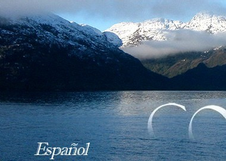
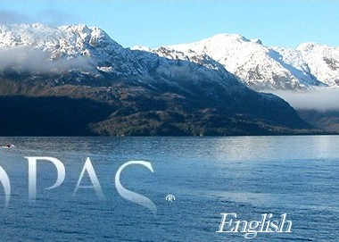
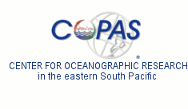
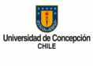
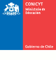
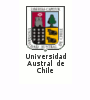
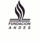

COPAS Center
© Copyright 2005 - 2020 Universidad de Concepción
All rights reserved. Partial or total reproduction of material appearing in this web site is not permitted
without previous authorization by the Universidad de Concepción.
Mario Baltazar
Administrador
FONDAP-COPAS Center
Universidad de Concepcion
info@copas.cl
Work
Address:
Universidad de Concepción; Edificio Departamento de Oceanografía
P.O.BOX:
160-C
Concepcion
Chile
Work
56-41-2204520
TZ:
-04:00